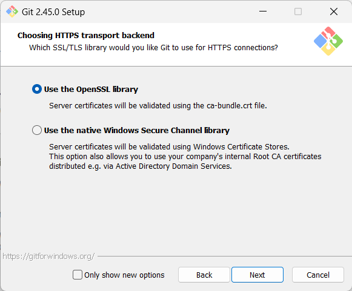
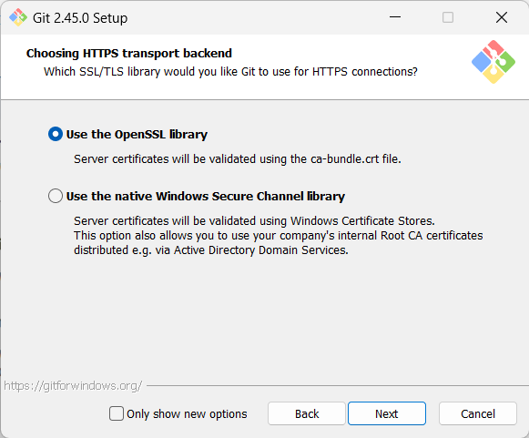

スクリーンショットがない箇所はそのままでNextを押してOK


最後にInstallのボタンを押すことでgitのインスト―ル完了！
入っていたら設定を確認しつつとばしてOK
入っていなかったら
GitHubのプロフィール設定のページ(https://github.com/settings/profile)で自分のPublic profileの「Name」 を確認してメモ帳などのテキストエディタにコピーしておく。
ここからはGit-2.45.0-64-bit.exeを参考に進めていきますbit数やバージョンが違う場合各自で確認しながら進めてください。
ダウンロードしたGit-2.45.0-64-bit.exeをダブルクリック。Gitに適用されているGPLライセンスについて確認。
参考になるサイトはこちら。
とほほのライセンス入門(https://www.tohoho-web.com/ex/license.html#gpl-license)
GPLの解説：GNU General Public Licenseの基本概念と活用法
(https://the-simple.jp/gpl-commentary-basic-concepts-and-usage-of-the-gnu-general-public-license)
簡単にまとめるとGPLライセンスのものは
無断で利用・改造・再配布可能ですが、GPLのモジュールをライブラリとして呼び出すだけでも呼び出したソースコードもGPLライセンスになって成果物の配布先に開発コードを公開する必要が出てくるよ。気をつけようね。
スクリーンショットを確認しつつ設定を進めていく（それぞれの設定の意味は各自で調べてね）
スクリーンショットがない箇所はそのままでNextを押してOK

最後にInstallのボタンを押すことでgitのインスト―ル完了！
GitHubと連携させて利用するための設定を行うよ。
スタートボタン（画面下にあるwindowsマークのボタン）を右クリック「ターミナル（管理者）」を起動してターミナルのタブを「コマンドプロンプト」に切り替え。
gitの「グローバル設定」を確認するよ。
コマンドプロンプトに
”C:\Users\xxxx>git config --global -l
core.editor="C:\Users\xxxx\AppData\Local\Programs\Microsoft VS Code\bin\code" --wait”
と出力される。（xxxxの所は自分のユーザー名に読み替えてください）
インストール中に選択したデフォルトエディタ設定に選択したエディタが設定されているのを確認。(スクリーンショットを参考にしたならVScodeになっています。)
次にgitの「システム設定」を確認するよ。
コマンドプロンプトに
C:\Users\xxxx>git config --system -l
diff.astextplain.textconv=astextplain
filter.lfs.clean=git-lfs clean -- %f
filter.lfs.smudge=git-lfs smudge -- %f
filter.lfs.process=git-lfs filter-process
filter.lfs.required=true
http.sslbackend=openssl
http.sslcainfo=C:/Program Files/Git/mingw64/etc/ssl/certs/ca-bundle.crt
core.autocrlf=input
core.fscache=true
core.symlinks=false
pull.rebase=false
credential.helper=manager
credential.https://dev.azure.com.usehttppath=true
init.defaultbranch=main
ここで、
もしなっていなかったら、
ここで管理者権限で起動していないと失敗してしまうので注意。
このようにコマンドを実行することで設定を変更することができます。
また、グローバル設定、システム設定のほかに必要に応じてローカル設定も追加できます。これによってGitHubアカウントのファイルごとの使い分けができるけど詳しいことは各自で調べてください。
gitとGitHubを連携させるために次のコマンドを先ほど確認したユーザーネームとコミット用メールアドレスに書き換えて実行。
git config --global user.name "Name"
git config --global user.email "12345678+GitHubAccountName@users.noreply.github.com"
git config --global core.quotepath false
もしGitHubのユーザーネームが"Test"コミット用メールアドレスが"12345678+Test@users.noreply.github.com"だったら
git config --global user.email "12345678+Test@users.noreply.github.com"
git config --global core.quotepath false
と入力して実行。
最後に
core.editor="C:\Users\kyuri\AppData\Local\Programs\Microsoft VS Code\bin\code" --wait
core.quotepath=false
user.name=Name
user.email=12345678+GitHubAccountName@users.noreply.github.com
設定が追加できていることを確認出来たらgitの最低限の設定は終了ですお疲れさまでした。
GitHubとはコードを共有するためのWEBサービス。(USBなどでも共有することはできるけどバージョン管理やそもそも共有するのがめんどくさい。)
GitHubを活用するとほかの人と共有しながらコードを書いたり、バージョンを簡単に管理して前のバージョンに戻ることもできる。
リポジトリ(repository)…プロジェクトを構成するファイルやフォルダ、その変更履歴を保管しておく場所
ローカルリポジトリ…今自分が作業しているPCの中に作成、設置するリポジトリ。
リモートリポジトリ…GitHubなどの外部に作成、設置リポジトリ。ローカルリポジトリを使用して操作する。
コミット…変更内容をリポジトリに記録すること。
プッシュ(push)…ローカルリポジトリの変更内容をリモートリポジトリにアップロードすること。
プル(pull)…リモートリポジトリの変更内容をローカルリポジトリにダウンロードすること。
まずはローカルリポジトリを作成してリモートリポジトリにアップロードする手順を説明する。
フォルダを新規作成する。ここでは
git_testを作成したらVisual Studio Codeを起動して
GitHubは何もない状態だとローカルからリモートリポジトリを作成することができないので、README.mdを作成し、適当な文章を書いて保存する。
Visual Studio Codeのウィンドウの左側に並ぶアイコンから「ソース管理」を選択。
「GitHubに公開」のボタンをクリックしてGitHubに公開する。
サインインの許可を求められるダイアログが表示されるので「許可」を押したのち、GitHubにサインインする。
Visual Studio Codeを開くか聞かれるので「isual Studio Codeを開く」を押す。
拡張機能がURLを開くことを許可するか聞かれるので「開く」を押す。
その後上部に表示されるドロップボックスを確認してOKを押していく
パブリック(公開)にするかプライベートにするか(非公開)の確認
どのファイルをコミットするかの確認
次のダイアログが表示されたら「Sign in with your brower」を選択する。
GitHubのサインインが要求されたらサインインする。
以上でVisual Studio CodeとGitHubの連携が完了してリモートリポジトリが作成される。
自分のページに飛んで実際に作成されているか確認。
先ほど作成したREADME.mdを編集して変更内容をコミットしてプルする手順を説明する。
まずはREADME.mdに追加でテキストを追加して保存。
その後「ソース管理」を選択。ソース管理のパネルでREADME.mdの横にある+をクリック。
これによって変更がステージング(どのファイルをコミットするのか選択)された。
次はコミットするために「コミットメッセージ」(空欄にできない)を入力して「コミット」をクリック。
これによって変更内容がコミットされた。
「変更の同期」をクリックしてプルする。
次のダイアログが表示されたら「」を選択する。
これで変更内容がリモートリポジトリにプルされた。
長々と続きましたが以上でgitの導入とGitHubを使ったコードの共有の手順の説明は終了です。
お疲れさまでした！
これでローカルから簡単にVisual Studio Codeを使用してリモートにデータを保存できるようになりました。
ここで説明したこと以外にも「リモートリポジトリの削除」、「コマンドラインからの操作方法」
「ブランチの作成」、「プルリクエストの作成」などGitHubの機能はまだまだたくさんあるので
希望があればまたページを作成しようと思います。
最後に改めて本当にお疲れさまでした！！！